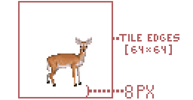

Installation
You can select a different tileset than the one included with the game. You have two options: stable or latest. The stable version is tested and reliable, while the latest version is updated frequently and may have new features or bug fixes.
Stable
The easiest way to download the tileset would be from the latest release. It is a stable tileset build which you can safely put into the game and run.
- Download the latest release from the releases page (Not the source code !).
- Extract archive once it's downloaded.
- Put UltimateCataclysm folder from extracted files into your
cataclysmdda\gfxfolder. It should look like:cataclysmdda\gfx\UltimateCataclysm.
[!WARNING] If you have "Missing "tile_config.json" file" error upon loading the tileset, this means that you have downloaded and extracted the source code, and not the tileset.
Develop
The most up to date build of the tileset (per commit). Might be broken.
- Locate the most recent commit that has a green check right next to it here.
- Click on the green check -> "CI Build / CI Build" Details
- Find Artifacts drop-down menu, click on it, and then select the artifact.
- Proceed with step 2 and 3 from stable installation.
[!NOTE] Red cross means that the build has failed and no artifacts were produced.
Building
To create your own tileset, test new sprites, or contribute to the project, please follow the instructions for your operating system:
- For Linux, macOS, or other Unix-like systems, see this guide.
- For Windows, see this guide.
These guides will help you set up the required tools and steps to build the tileset from the source files.
Windows guide
Guide for Windows users, without touching the Command Line.
First steps
[!NOTE] It is a good practice to create new branch at the start. Name it "playground" for example. Your repo is your own private space. You can do whatever you want in it without affecting the original project. However, if you want to contribute to the project, you need to follow some guidelines. One of them is to keep your master branch clean and empty, and do your work in a separate branch. This will make it easier for you to sync your changes with the upstream repo and create pull requests.
Now you have source files on your drive and some tools as well. These tools will help you managing multitile objects, setting up the environment and composing tilesets.
The Game
The easiest way to get the game is to use the CDDA Game Launcher. With the launcher, install the latest experimental release.
Tools need to know where to put composed tileset. So you have three options:
- copy
set_game_path.cmdto your game dir and double-click it. - drag and drop game folder over
set_game_path.cmdscript. - or just double-click it and type path to the game folder.
[!NOTE] if you change your game folder later, you can repeat this step and provide new path.
Tilesets and Windows
Some tilesets reuse assets from other tilesets. This can be done by using symlinks, which are shortcuts that point to another file or folder. However, symlinks are disabled by default in Windows systems. If you want to compose tilesets that use symlinks (such as Altica or Ultica-ISO), you need to enable them.
To enable symlinks, go to the tools folder in your local repository and double-click on git_symlinks.cmd. This will run a script that will configure your Git settings to allow symlinks. 2
Python and Windows
If you dont have Python istalled yet you need to disable app execution alias.
Go to -> "start" and type "Manage App Execution Aliases". Go to it and turn off "Python"

Make sure you are not using the Python version from the Microsoft Store. This version is incompatible with the tileset composing tools. You can uninstall this version safely from your system. The tools from the repo will install Python 3.12 for you, which you can use for any purpose.
Open the tools folder in your local repository and double-click updtset.cmd
Select any common tileset (like MShockXotto+) for the first runs until it finally compose.
At the first run script will try to install Python using winget. In case of successful install it would stop and ask you to relaunch it again.
[!WARNING] If script failed to install Python you should do it manually from python.org. During installation, check "Add Python to PATH".
Python and components
The script will first check if Python is installed on your system. It will print the Python version and verify that the pyvips module and the libvips library are available.
- If pyvips is missing, the script will try to install it automatically. This step should not cause any errors, only informational messages.
- Next, the script will check if there are any libvips binaries in the system. If not, the script will attempt to download the 8.15 version and unzip it using VBS into the user’s home folder. Then, the script will call set_vips_path.cmd with this path.
If the script successfully adds libvips, it will stop and ask the user to run it again.
[!WARNING] If script failed to install libvips you should do it manually. Download the latest libvips distribution from libvips.github.io get vips-dev-w64-web-#.#.#.zip NOT vips-dev-w64-all-#.#.#.zip extract files somewhere and drag and drop this folder on
set_vips_path.cmd
Final
Maximum at third run script should compose tileset and propose you to check it in game. If something goes wrong, read the script's output carefully!
[!TIP] You may ask for help at tileset Discord server.
[!TIP] To set a tileset to compose permanently, double-click
set_tileset.cmdand select the desired tileset. If not set permanently, the update script will allow for interactive selection of a tileset. Note: This sets the environmental variableCDDA_TILESET. Delete it if you want to select tileset again.
[!TIP] When scripts ask you to restart your computer it may be necessary on some systems. But you can try and skip reboots.
Some tasks can be done much faster and easier with command line actually. So you can try to run winget install Github.GitHubDesktop
That tool will guide you how to enable symlinks in your system and turn them on for your local repository.
Nix Installation
Documentation of developing tileset with Nix.
Prerequisites
You will need:
- Python 3
- Libvips
- pyvips (install it via python pip:
pip install pyvips)
Build
As this repository uses flakes, it's possible to build any of the tileset (not only UlitCa) using nix build .#{name} command. For example:
# This will build UltiCa
nix build .#UltimateCataclysm
# But this will build Mushroom Dream
nix build .#Mushroom-Dream
And the result will be in result directory, ready to put into the game. If you want to link the result to the different directory, use --out-link {path} argument.
Devshell
Tileset flake also provide a simple devshell with python and vips to run tools such as compose.py or generate_preview.py.
# Enter the devshell
nix develop .
# This now works
python3 tools/compose.py --use-all gfx/UltimateCataclysm out
Or if you have direnv enabled, it will automatically enter the devshell upon opening the repository.
Style guidelines
We have rules for sprites these days. Not only because it's important to keep tilesets consistent, but also to make things recognizable on the screen in the game. Without strict rules, any tileset will quickly turn itself into a mash up of pixels.
Different tilesets have different guides:
UltimateCataclysm (Ultica) style guide
Rules and guidelines are divided between groups:
- General
- Terrain/Furniture
- Creatures
- Overlay (wielded/worn/mutations)
- Items (things on the floor)
General style guidelines
A bunch of rules that can be applied for every type of sprite.
Use a limited set of colors as in pseudo-16 bit format

This rule is one of the main guidelines not only for this tileset, but pixel art in general. Each "colour block" should use 3-6 colors for shades. For example a blue shirt might have one light blue highlight, two medium blue main colours, one dark blue shade, and one very dark blue-green shade. See colors tutorials section on lospec if you're having troubles with the palette.
Try to draw with realistic proportions

Small items/creatures should be small. But if it feels like they are too small, it is ok to make them bigger for the sake of readability. Be careful about sizes.
Use hard edges on foreground objects

Such as items and monsters. This is important because it makes things much more recognizable when zoomed out.
The default light source is assumed to come from above and to the left.

Terrain & Furniture
Walls and floors are 32x32, other things may vary
// TODO: add terrain example image
Again, you should size things accordingly to their size in the world.
Keep color value level in medium range
// TODO: add image with color levels explanation
It's important to keep the value level of background objects (terrain, furniture) at about 60-80, because it helps define foreground entities (e.g. monsters) better.
Keep table surfaces consistent
When drawing something similar to a table keep in mind that currently table surfaces usually occupy the top 19 pixels of a tile, and items may be optimized to look placed in that area.
Creatures
Take appropriate tile size
Consider 32x64 a default template for human-sized creatures:


Monster sprites should have ~8px offset from the ground

To give them a 3D look.
Facing to the right by default
And remember that tiles are mirrored when creatures move.
Monsters should drop shadows when possible
// TODO: add monster with a shadow image
Put shadows in a bg field in json, use shadow_<width>x<height>_<size> template. You can find shadow files in the root of any size directory (e.g. pngs_normal_32x32).
Overlay
Rules about hair, mutations, worn clothes, wielded items and survivor's skin.
32x64 tile base
Use these as reference (base male and base female sprites):
Items
Maximum item size is 32x32; small items should fit within 16x16

This is a continuation of the general rule.
Item tiles should be as close to scale as they can be while still recognizable

When in doubt, err on the side of larger, but avoid filling an entire 32x32 tile with a single nail or it would look like a nail as large as a survivor. Even for single items, putting multiple items into the icon could give it more recognizability without making it look comically huge.
Containers should be drawn empty

Like jars or bottles. The game will use the same tile no matter the actual content of the item.
100% black underline without shadow
// TODO: add item shadow image
No shadow will make sure that players don't confuse several big items with furniture. Black underline helps to identify an item in the game world.
Consider placement on tables

Table surfaces usually occupy the top 19 pixels of a 32x32 sprite, try fitting your items there when possible.
MShockXotto+ style guide
You can read it from the beginning or jump to the topic:
MShockXotto+ style guide
MShockXotto+ was originally the mashup of the MShock and the Xotto tileset, both of which were already build on a few other tilesets. This means that MSX never had a strong style guide. And it still has not, the present style guide will list a few rules to follow but since MSX is a patchwork of different styles there's a lot of wriggle around the guide. The main thing that we want to keep from the previous tilesets is the anime/cartoon style of the monsters and characters, and the main thing we're moving away from is the random noise over sprites.
- Cartoon style, make your sprite recognisable.
- Clean texture without random noise
- Keep the colour count per material (bone, meat, cotton, wood, metal etc...) low, around 3-4 per material.
Monsters

- Black outline RGBA(0,0,0,255)
- Round shadow directly below the monster RGBA(0,0,0,115)
Optional but Helpful
While not strictly necessary, these tools and knowledge will help:
- A visual editing program (Aseprite is a good option)
- Basic pixel art fundamentals such as Jaggies, Hue Shifting, Anti-Aliasing, Banding, etc. If you need to learn these, check out these guides and tutorials.
Finding References
References are essential when creating any sprite. Start by gathering visual references for what you want to create.

Not all creatures in Cataclysm have real-world counterparts. You can create your own references through photobashing (combining multiple images) or drawing your own. Photobashed references don't need to be perfect—they just serve as a visual guide.

Your own hand-drawn references work great too. You can shrink your drawings into pixel art size and use them as tracing tools.
[!WARNING] Avoid AI for reference materials. While AI results may look polished, they often introduce errors in anatomy and shading that will affect your sprite quality.
Sprite Size
The most common sprite size is 32x32, which works fine for anything human-sized or smaller. For larger creatures (megafauna, bosses, etc.), consider using 64x64 or larger sizes. A bigger sprite better conveys size and threat while providing more room for detail.
Creating the Outline
- Start with a clear outline in pure black RGBA(0,0,0,255)
- Only the outward-facing outline strictly needs to be black, but outline everything for now
- Refine by removing jaggies as needed
- Later, recolor any internal black lines if needed

Picking Colors
Use existing color palettes from established MSX+ sprites when possible. Study sprites by Dandy in particular for good examples.
If you create your own palette, keep it to 2–5 colors and use Hue Shifting: start with cool dark colors and gradually shift toward warm tones. You can also mix multiple color ramps from existing palettes.
Lospec has community palettes available for download and use.

Start with the darkest (non-black) color in your palette and build up. Since you're working with limited colors in a cartoony style, dark colors serve double duty for both shading and base color (like fur).
Shading
Build up color gradually from dark to light. The characteristic MSX+ style uses rectangular blocks of color for shading:

Sparingly use the lightest colors from your palette.

Use a little anti-aliasing on larger sprites (64x64+), but keep it minimal to maintain the clean, cartoon aesthetic.

Polish
Take breaks and view your work with fresh eyes. Ask for feedback if you hit a wall. Small adjustments—brightness, inner line colors, alternative shading—often make the difference between good and great.
Shadows
Add shadows after the sprite is complete:
- Use pure black with transparency set to 115 : RGBA(0,0,0,115)
- Shape as a circle directly below the monster
- For large sprites, use tools like the filled ellipse tool in Aseprite
[!Tip] You can use one of those shadows:


Items

- Black outline RGBA(0,0,0,255)
- Items should be roughly scaled to the character, meaning that small object like pens and box cutter should be 20x20 and big items like disconnected oven should be 32x32.
- However, magnified items, like this 32x32 cooked meat sprite, are still okay for the sake of being easy to recognise and looking nice.
Grades of Steel

Use those palettes to differentiate the various grade of steel in items
Furnitures

- Outline using a less-saturated, darker color taken from the sprite's palette.
Terrain

- No outline required
- Terrain should fill their canvas as the game doesn't display anything behind them. Transparency will appear black in game.
HollowMoon style guide
There are some guides:
- Summary guide
- Detailed guides
HollowMoon general style guidelines
A bunch of rules that can be applied for every type of sprite.
Summary
In general you should focus on keeping things simple, eye catching and visually interesting where possible. When in doubt about something you can contact Joshuu on the discord or secretstamos on Github. If you do, please send the original file to make helping you easier.
Use a limited set of colors as in pseudo-16 bit format

Colors are exclusively limited to four main colors in HollowMoon per season. You only need to submit sprites in the one color scheme - the script can handle the other seasons.

Note: You must use these colors in their exacts. The script cannot detect any other colors.
Use hard edges and borders around everything

Everything needs a hard edge and a border. The edge should be in a dark color and the border should be in the lightest color.
Shadows are allowed for items and furniture
You are allowed and encouraged to use shadows outside of borders for world objects and characters.

Shadows for items however must maintain the bottom border. See:

Light direction, illumination and dark areas
General location of the sun (or light in general) is top left.
Light is coming from the top left side (illuminated areas) towards the bottom right side (darker areas, shadows).

Illumination of round objects, like orbs
Same goes for round objects. Mind that different surfaces reflect light differently.


Keep it light and fluffy
A very important goal of this set - keep things generally thick and fluffy wherever possible. It is important to disregard reality and detail in situations where they might hinder the final product's readability.
A whip, for example, is a very long and thin object. While you might initially think that a whip would be a single pixel wide (as it would be, realistically) this wouldn't be a good idea.

As seen in the above image, while the left whip retains a similar form to the acceptable whip, it is too thin and realistic for the set. It is needed to thicken out. Likewise, the center right whip might be realistically sized, but this level of detail does nothing to help and only exceeds its welcome. The far right image is structurally identical to the acceptable whip but it does not pop. Without simple highlights, it blends together and doesn't look very good at all.
Please keep these in mind, especially when doing ropes, chains, plants, fences and other thin objects.
Revisions happen
Lastly it is important to recognize that revisions are bound to happen. I will periodically perform content revisions from time to time.
The Scrapbook and how to use it
There are two files that are referenced as 'the Scrapbook' or 'the Sketchbook'
-
First file is a PNG file with sorted unimplemented sprites, that can be implemented as is or after some changes according to the style of the tileset.
-
Second file is a PNG file with unsorted sprites, both implemented and unimplemented. Use it as a resource to fuel your imagination when you create new sprites, as it can be a valuable insight of the general feel of the tileset. Remember though, that this is still just a sketchbook full of prototypes, unfinished images, and concept art - so not everything there is compliant to the offcial style of the tileset. Do not change this file.
{kind=link}
{kind=link}
When deciding to make a new sprite, be sure to check the scrap section to see if it already exists, and in particular the First file mentioned above. There are plenty of sprites that are already finished that haven't been implemented yet. When you decide to implement it, remove the sprite from the file.
Once you're certain it hasn't been already been done, that is a great time to start. Otherwise use the sprite in the scrapbook to implement it in the tileset.
Detailed guides
Script
There is a Python helper script named: recolor_season_variants.py
Creating seasonal variants of your tiles manualy is inconvenient. This is where Python script comes in to handle this job for you. It creates recolored seasonal variations for sprites in target folder or even all subfolders for HollowMoon tileset. It requires a PNG file made in one of the seasonal palettes.
Usage:
-
Create a PNG sprite in any consistent palette allowed by HollowMoon tileset. For transparency use background color allowed by the tileset, it will be replaced by the script with true transparency.
-
Create a subfolder and name it using target file's name (for example 't_dirt'). Name should correspond to how the game names relevant object (terrain, furniture, etc.).
-
Name your source PNG file {season}.png (for example summer.png) where {season} corresponds to the palette you used to create the sprite. If you used a spring palette you can also call it 'generic.png'.
-
Place the file in the created subfolder and run the script targeting that folder. Script will also target subfolders so you can run it for the whole tileset folder.
RGB values
Here are exact RGB values of colors used in each and every palette:
-
Spring RGB: (240, 236, 187), (181, 175, 105), (115, 130, 92), (95, 76, 53),
-
Summer RGB: (255, 216, 148), (194, 176, 107), (83, 138, 106), (73, 75, 88),
-
Autumn RGB: (230, 227, 171), (216, 147, 110), (163, 100, 92), (90, 68, 72),
-
Winter RGB: (254, 254, 254), (203, 200, 218), (137, 119, 142), (90, 68, 72)
-
Background (for the script transparency): 21, 19, 21 (equal to HTML 151315) Background is translated to true transparency of: (255, 255, 255, 0) by the script.
FAQ
Q: There are some "shadow" sprites consisting of only outlined dark body. Are they allowed or are they placeholders?

A: The "shadow" sprites are to be used for small monsters that don't need detail or would look bad with detail.
In other cases (like items) they are to be enlarged enough to utilize the palette - remember: readability first.
"Shadow" sprites can be sparingly used as placeholders.
Thanks for reading! Good luck out there

Terrain
Terrain
Composition
One of the main things to be careful about with composition is to avoid excess noise. Heavy use of dark colors or light colors can cause issues.

In general terrain, like the player sprite, should be more subdued and less shaded when compared to items or furniture.
Tiling
To ensure your tiles mesh well with other tiles, the secondary color should be used as a base. Using other colors as a base can lead to issues of fitting in and make borders obvious.

As seen above, this tile sticks out.
Terrain
Composition
Like terrain, it is important to keep walls simple. Since they are more angled, they are allowed additional shading, however noise should be reduced whereever possible.

Bumpers
As you might have noticed, walls have a uniform bumper at the top. Please keep this in mind when adding new walls or coverting walls that might not have this. This should also help speed up future wall creation.

Overlay
Item overlays should focus simplicity over all else. We generally want the characters to remain undetailed and anonymous.

When in doubt, keep it simple. Do not use the lightest color anywhere inside a character or on an item overlay
Weapon overlays
Weapon overlays should follow a similar rule to armor overlays with simplicity. They should be held in one hand such as the following examples:

How to
Some guides that might help
- Multitiles summary
- Multitiles detailed (will open new browser window with main CDDA documentation)
- Tileset structure
- Windows and Symlinks
Tileset structure
//TODO: rewrite document from scratch
- Put files into the best appropriate folder (terrain, furniture, mutations, items, etc).
- Give files a name based on the JSON ID they suit, eg
t_floor. - If multiple files apply to that ID, make a subfolder eg
terrain/t_floor/for all the views. - For the moment, there isn't a clear naming convention after that. Working on it.
Autotiles
Autotiles, referred to in CDDA game code as "multitiles", are tiles that display differently depending on their relationship to other sprites in the group. Water is a classic example: drawing water as an autotile allows it to display as a single body with edges, instead of either individual little puddles, or a large blue expanse with no shoreline.

To simplify drawing these tiles, we use templates with 4x4 and 8x6 grids of all the tile boundary types in a predictable order. Transparency allows overlapping the same tiles on different backgrounds, so we don't have to redraw the water boundaries for dirt, grass, rock, etc. - we draw the water once, and the transparent edges allow it to overlap dirt, grass, rock, and so on.
The 4x4 template supports only current game code:

Black space indicates background, and white is the shape of the furniture or terrain.
And the 8x6 is an attempt at future-proofing the project that was created before 4x4. Currently, only a few of these tiles are supported in CDDA, although some day it would be nice to have all of them available:

The sixteen tiles in the top-left 4x4 block contain the basic boundary shapes that are just the 4x4 template in a different order.
Both terrain and furniture tiles may use this template. Terrain like grass or fences:


and furniture like bathtubs or benches:


With the current tile support there are two ways you might use an autotile, demonstrated by the bench and table autotiles. What we're missing is the ability to draw different types of diagonal connections. Without that, we have to represent things that are likely to have diagonal connections or unlikely to have them in different ways.
These break down into a few parts as recognized by the game.
- corner: These attach two adjacent tiles perpendicular to the tile in question.
- edge: These tiles connected either on the top-bottom or left-right sides, in a straight line.
- unconnected: This is a tile just hanging out alone, unconnected to its neighbors.
- center: This is a 4-way intersection tile, connected on all sides.
- end_piece: These tiles are connected only on one side.
- t_connection: These are the 3-way intersection tiles.

Things like benches
The bench autotile is an example of an autotile that we don't really expect to be displayed double-thick most of the time. Generally you're going to draw a bench like this:
.....
bbbbb
.....
rather than like this:
bb.bb
bb.bb
bb.bb
For this reason, the t_connection and center art for the bench are drawn as 3-way and 4-way intersections.
Things like tables

The table autotile is an example of a tile you would often expect to be drawn double-thick, connecting to itself. While you might also draw it one tile wide, two or more tiles of contiguous table are common. For this reason you can't assume there's an edge visible on a t_connection or center tile. Consider the center tile in a table like this, represented by a capital T amidst lower case:
.....
.ttt.
.tTt.
.ttt.
.....
That center tile can't be drawn as a 4-way intersection, or there would be holes in the table. It has to be drawn as a flat contiguous tabletop. Likewise the t_intersection tiles (the middle piece of each edge section) should be assumed to connect diagonally as well, again to prevent holes in the table.
Slicing autotiles
Before an autotile template can be used by the game, it needs to be sliced up into individual tiles.
We use the tools/slice_multitile.py script to achieve this.
To run the script, you will need python installed, as well as the libvips graphic library. Further, numpy is required. Something like these commands should suffice to install them on Ubuntu:
$ sudo apt install python3-pip libvips
$ pip3 install pyvips numpy
If all goes well, you should be able to run the slice_multitile.py script and see the usage note:
$ tools/slice_multitile.py
usage: slice_multitile.py [-h] [--tile TILE] [--out OUT] [--no-json] [--background BACKGROUND] image width [height]
slice_multitile.py: error: the following arguments are required: image, width
So if you have created a mud_autotile.png image, using the autotile template above, you can tell
the script to slice it into 32x32-pixel tiles with a command like this:
$ tools/slice_multitile.py mud_autotile.png 32 --out mud_tiles
This will create a mud_tiles folder with separate images for each tile in the template, along with
a JSON file with connection data, for example:
- mud.json
- mud_center.png
- mud_corner_ne.png
- mud_corner_nw.png
- mud_corner_se.png
- mud_corner_sw.png
- mud_edge_ew.png
- mud_edge_ns.png
- mud_end_piece_e.png
- mud_end_piece_n.png
- mud_end_piece_s.png
- mud_end_piece_w.png
- mud_t_connection_e.png
- mud_t_connection_n.png
- mud_t_connection_s.png
- mud_t_connection_w.png
- mud_unconnected.png
Slicing isometric autotiles
Isometric autotile is supported by slice_multitile.py using the --iso argument.
A rhomboid template like multitile_grid_4x4_iso.png is uses as the basis.

Re-arranging for ISO with height
Unfortunately, the approach explained in Slicing isometric autotiles does not work for ISO sprites with a height (like walls etc.).
For working with ISO sprites with a height, options --rearrange-top <height> and --rearrange-bottom <height>
of slice_multitile.py can be used. The workflow for walls would be:
- Draw wall tops on the flat ISO template
- Use
--rearrange-bottomto give the sprites a height and arrange them in a usual ortho autotile layout - Draw wall sides on that created layout
- Slice the result without using
--iso
Tall multitile template
There is now support for tall multitile templates too:

$ tools/slice_multitile.py multitile_grid_4x4_tall.png 32 64 --tile "f_bookcase"
Unslicing
There is also a script for reverting the slice action when you want to adjust all sprites as one image:
cd mud_tiles
$ tools/unslice_multitile.py mud
Slicing variants
Randomly selected sprite variants can be used based on weights.
For easier creation of these variants, multitile-like images can be sliced into numbered variant sprites using slice_variants.py.
Usage is the same as with slice_multitile.py. E.g.:
$ tools/slice_variants.py t_floor_multitile.png 32 32
The script can handle any multitile size, not only 4x4.
For iso multitiles, use switch --iso.
Multitiles detailed info
How to clone Chibi-Ultica's symlinks on Windows
This guide comes from Stackoverflow
1. Make sure git is installed with symlink support ( this might require to re install git )

2. Tell Bash to create hardlinks instead of symlinks
-
Edit: (git folder)/etc/bash.bashrc
-
Add to bottom:
MSYS=winsymlinks:nativestrict
3. Set git config to use symlinks
- Run command:
git config core.symlinks true
OR if you have not cloned the repo yet
- Run command:
git clone -c core.symlinks=true https://github.com/I-am-Erk/CDDA-Tilesets.git
4. Pull the repo
NOTE: Unless you have enabled developer mode in the latest version of Windows 10, you need to run git bash as administrator to create symlinks
5. Reset all symlinks (optional)
If you had already cloned the repo before the introduciton of the Chibi_Ultica symlinks, you may find that the symlinks are not being created correctly so to refresh all the symlinks in the repo you can run these commands.
find -type l -delete
git reset --hard
NOTE: this will reset any changes since last commit so make sure you have committed first
Creating mod tilesheet using existing tools
If you want to create a quite extended mod for CDDA and it'll be shipped separately from the main game you need a composed tilesheet.
It is not a problem for mods with a couple of sprites, but if you have a lot of sprites better to use existing tools.
Creating a dummy tileset
First of all you need to create a dummy tileset in the tileset repository and receiving folder in your game.
- Create a
my_modfolder underCDDA-Tilesets\gfx(tilesets repository) - Create a
my_modfolder underCataclysm\gfx(your game folder)
Now you need to create some files in repository.
Go to CDDA-Tilesets\gfx\my_mod\ and create tileset.txt and add the following content:
#my_mod
NAME: my_mod_name
VIEW: my_mod_view
JSON: tile_config.json
TILESET: tiles.png
As you can see name and view should be somehow related to your mod name, but actually they can be abything but existing tilesets names.
Copy fallback.png from any other existing tileset into your CDDA-Tilesets\gfx\my_mod\ folder. It is needed only to be checked once and you will delete it later.
Lets assume that you have a number of sprites and sprites size are: x=32 and y=48. Put all of them into the folder and name this folder: pngs_my_mod_sprites_32x48.
Now you need to create the final file: tile_info.json with following content:
[
{
"pixelscale": 1,
"width": 1,
"height": 1
},
{
"my_mod_sprites.png": { "sprite_width": 32, "sprite_height": 48 }
}
]
Composing the "tileset"
Use updtset.cmd tool as usual (you may refer to this doc). Your new dummy tileset will appear in the list of source tilesets available for composing.
If you did everything right you will get the composed tileset in your game directory Cataclysm\gfx\my_mod.
You will get: | file | purpose | |--|--| | :bar_chart:fallback.png | to be deleted | | :bar_chart:my_mod_sprites.png | your composed tilesheet | | :memo:tile_config.json | you need to fix it a bit | | :memo:tileset.txt | to be deleted |
Check my_mod_sprites.png - this file should contain all your sprites.
Fixing the json
Resulting tile_config.json supposed to be for a full tileset, so you need to fix it first. Open it in any text editor, copy all content and past it here: CDDA json linter and press "LINT" button below.
Now this file content can be easily readable. You will get something like this:
{
"tile_info": [
...
],
"tiles-new": [
{
"file": "my_mod_sprites.png",
"//": "range from 1 to X",
"sprite_width": 32,
"sprite_height": 48,
"sprite_offset_x": 0,
"sprite_offset_y": 0,
"tiles": [
...
]
},
{
"file": "fallback.png",
"tiles": [],
"ascii": [
...
]
}
]
}
You need to do the following:
-
Remove
tile_infosection. -
Instead add the following content before
tiles-newsection:"type": "mod_tileset", "compatibility": [ "Chibi_Ultica", "MShockXottoPlus" ], -
Remove comma between
my_mod_spritesandfallbacksections. -
Remove
fallbacksection. Tileset will handle fallbacks. -
Wrap all text into square brackets
[ ]. -
Fix offset values. In our demostration case
sprite_offset_ywill be-16. -
Be sure to include right tileset names into
compatibility.
You will get something like this:
[
{
"type": "mod_tileset",
"compatibility": [
"Chibi_Ultica",
"MShockXottoPlus"
],
"tiles-new": [
{
"file": "my_mod_sprites.png",
"//": "range from 1 to X",
"sprite_width": 32,
"sprite_height": 48,
"sprite_offset_x": 0,
"sprite_offset_y": -16,
"tiles": [
...
]
}
]
}
]
Now you can use your mod tilesheet.
Tools
Common tools (scripts)
These are the tools that works the same way on every operating system.
They supposed to run in shell environment and if you afraid doing so please refer Windows wrappers documentation.
add_outline.py
// TODO: Add some info about add_outline.py
compose.py
Please refer main CDDA documentation about this tool.
generate_preview.py
// TODO: Add some info about generate_preview.py
// TODO: Add link to how-to/preview section
recolor_season_variants.py
// TODO: Add some info about recolor_season_variants.py
Slicers
slice_multitile.py
// TODO: Add some info about slice_multitile.py
slice_variants.py
// TODO: Add some info about slice_variants.py
ultica_build_flags.py
This script uses GIMP to take in flag-like textures in scratch\UltimateCataclysm\items\flags and create contextual versions of those same flags, specifically:
- "postup", a drooped version for hanging flags on walls
- "hoisted", a waving version for hanging flags on flagpoles
- "", a crumpled version for a dropped flag variant item
To run, install GIMP, put flag textures in the above directory (along with an output folder), and run ultica_build_flags.cmd
Flag textures should be offset by 2x5 and have a size of 28x18 to appear correctly
Outputted flags must be moved manually to the appropriate gfx directory
If script runtime is too slow, move unneeded flags from scratch folder
unslice_multitile.py
// TODO: Add some info about unslice_multitile.py
Windows Wrappers for Common Tools
For more detailed information, please refer to the Common Tools section.
We understand that artists may want to participate in tilesets, but not everyone is familiar with programmer's tools and environments. To optimize artists' time and workflow, we provide some wrappers that offer automation with preferred interactions such as double-clicking and drag-and-drop.
These wrappers might have less functionality, but in most cases, their results are acceptable.
Infrastructure Building Tools
// TODO: Remember to update this section when 'updtset.cmd' is divided.
1) Installation
To work with tilesets and test them in the game, you need a clone of the tileset repository on your drive and download the game itself. You can refer to this page for details.
The current updtset.cmd wrapper is written for the Windows Command Shell and is supposed to run on every Windows version from Windows XP to Windows 11 23H2. However, according to this statistic, older Windows versions can be excluded and the script can be rewritten in Powershell.
At this time, the installation of necessary environment tools is tied together with preparation steps and the composing process.
The installation tool updtset.cmd will install the following on its first run:
- Python
- Necessary Python modules (pyvips and numpy)
- Necessary VIPS library and binaries
git_symlinks.cmd is a small script that runs commands necessary for symlinks to work in the repository. However, there is another method described here.
2) Preparation
There are some additional small scripts that are also written for the Windows Command Shell and should be rewritten in Python later, as Powershell does not support drag-and-drop over ps1 files.
set_game_path.cmd is a subtool that can be run separately from updtset.cmd and will set an environment variable pointing to the game. If you want to check your modified/added sprites in the game, tools need to know where the game is.
set_tileset.cmd - This subtool will fix a tileset for future composing runs. It is helpful if you prefer to work on only one tileset.
set_vips_path.cmd - This subtool allows you to define another libvips location.
All these wrappers can be launched by dragging and dropping the appropriate folder over them. They will check if that folder has the correct files (game executable, libvips binary) and set the corresponding Windows user environment variable. Here's the revised version with improved style and grammar:
Slicer
The Slicer wrapper, slicemt.py, is a wrapper for the common tools and performs the most repetitive process - slicing source files and composing tilesets. However, it cannot perform complex tasks such as multivariate multitile slicing or animation creation.
If you need to slice multitiles and check the result in the game, you can do the following:
- Create a shortcut for
slicemt.pyon your desktop. - Create a
sourcesubfolder in theobject folderinside a tileset repository. - Export a png file from your graphic editor to this
sourcefolder and name this multitile source accordingly. - Drag-and-drop the
sourcefolder over the said shortcut.
You will receive 16 sprites and a json file that will be used for composing. You may leave the source folder in the repository as it is ignored in the PR process. (example with screenshots)
Under the hood, the following process occurs:
-
The script (
slicemt.py) will try to check if there is asourcefolder to work on. If it was launched from the CLI inside theobject folder, it will try to find thesourcefolder one level deeper. -
If the script can find a folder with
pngat the beginning andNxMfollowing, it will assume that it runs in a tileset repository andNxMare sprite dimensions. This will allow it to make an assumption about whereupdtset.cmdis located.Otherwise, the script will stop working.
-
The script will try to make four different checks. Each check will try to find source files with a special name pattern. But you do not need to provide all of them. I will use
t_flooras an example tile name.-
Slicing Variants
The pattern is
*_var*.pngso you can provide following files: t_floor_var_1.png or t_floor_variants.png each file will be sliced into 16 separate files and each file will have a name t_floor_var_XX.png, where XX is a number from 00 to 15.If you provide more than one source file (for example t_floor_var_1.png and t_floor_var_2.png) you will receive 32 files numbered from 00 to 31.
In this and only in this case (slicing variants), you may provide a source file with a name different from the object name (t_floor). It can be used if you want to have variants for a subtile.
Providing a source file named
t_floor_unconnected_variants.pngwill produce variants namedt_floor_unconnected_var_XX.png.Running this script over the same
sourcefolder with only one variant source file two (or more) times will produce separate images with names numbered from 00 to 31 (or even more). So each run will append the existing set of variants.Do not forget to empty the
object folderfor each slice run. -
Slicing Simple Multitile
The second pattern is
object name+.pngso for our example, it will check fort_floor.pngin thesourcefolder and treat it as a multitile source.Slicing this source will provide 16 named as multitile sub-tiles and a json file (
t_floor.json).This is the most common usage of this wrapper.
-
Slicing Transparent Multitile
The third pattern is
object name+_t*.pngso you can provide names liket_floor_transparent.png,t_floor_trans.pngor event_floor_t.png. The resulting set will be named ast_floor_transparentand consists of 16 subtile images and a json file.This pattern/name is useful for high objects and the game can swap them in close proximity to the player.
Please read this document.
-
Seasonal Multitiles
Same as simple multitile, but the pattern is:
object_name_winter*.png object_name_spring*.png object_name_summer*.png object_name_autumn*.pngResulting sets will have names like
t_floor_season_winter, etc. -
Seasonal Transparent Multitiles
Everything is similar to the previous sections, except for the pattern.
objectname_seasonname_t*.png-t_floor_winter_t.pngwill work.
After slicing, the script will run
updtset.cmdwith the tileset name inferred from the path. -
Composer
For now, simply run updtset.cmd.